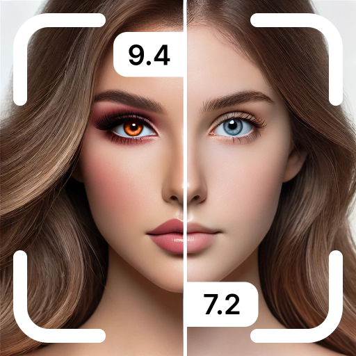
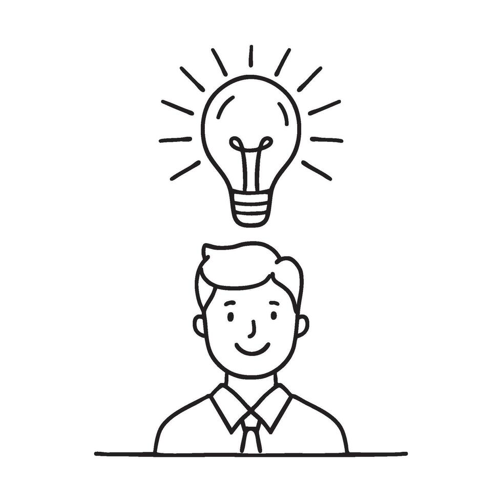

When I want to take a selfie, there is a reaction in my body, leading to a tilt of the chin, usually a smile or a facial expression, whilst aligning my face with the image I expect the camera to return. This leads to a moment in which I am stuck between two separate identities, the shifting unstable sense of 'myself' that moves through the world and a figure that could be seen to be polished on my screen.
This small everyday moment contains a structure Lacan insisted shapes subjectivity itself. What I see in a selfie is not simply a picture, but an image that is more coherent than my lived experience. This concept is the Imaginary at work.
"The transformation that takes place in the subject when he assumes an image" — Jacques Lacan, Écrits (2006)
Lacan describes the mirror stage as this transformation that takes place in the subject when he assumes an image. The infant, confronted with its mirror reflection, sees a unified, stable form that contrasts sharply with its proprioceptive experience of bodily fragmentation. In a moment Lacan famously calls "jubilant", the child identifies with this total form. However, the identification is from the beginning alienating. The ego is formed in an image that does not match lived experience. The mirror does not reflect the subject; it produces it.
In this light, the selfie is not merely a digital habit but a structural drama. The camera provides what Lacan would call the imago of total form — an externally presented unity, superseding the instability of interior sensation. There is an ease in seeing yourself as a coherent object. However, Lacan states that the ego formed in the mirror stage "will henceforth determine the subject in their symbolic relations" (Lacan, 2006). Therefore, the image becomes a destiny the subject continually attempts to live up to.
The split between my selfie image and lived body represents what Lacan refers to as méconnaissance (misrecognition). The selfie-self is smoother, more legible, more whole, promising what Lacan calls fictional mastery. However, the more ideal the image, the more it highlights the gap between the self that is lived and the self that is seen. The image offers a fantasy of completion — a fantasy that fuels desire.
The Registers: Real, Imaginary, Symbolic — And the Algorithmic
Key Lacanian Concepts
- The Real: Unrepresentable raw sensation of bodily being
- The Imaginary: Domain of images, identifications, and ego formation
- The Symbolic: Network of language and law structuring subjects
Lacan's three registers — the Real, Imaginary, Symbolic — surprisingly relate well with digital experience.
The Real is the unrepresentable, raw sensation of being a body, with the intensities, anxieties and discontinuities. The Imaginary is the domain of images, identifications and mirrors in which the ego is formed and selfies circulate. The Symbolic is the network of language and law through which subjects become legible.
In contemporary life, the Symbolic increasingly takes an algorithmic form. Platforms on social media rank, classify and circulate images according to unclear rules, transforming the display of selfhood into a system of technical-symbolic governance. The moment a selfie is uploaded, it is absorbed into a network in which visibility is restricted through code. This framework mimics Lacan's claim that symbolic law determines the subject's place within the social field. The Name-of-the-Father becomes the name of the platform.

Algorithms interpret which images deserve prominence whilst which remain to be unseen. They strengthen norms related to race, beauty and gender, filtering faces through categories that determine legibility and worth. Through this, the symbolic is not only simply linguistic — it is technical and infrastructural. The subject's very appearance is mediated by systems of power that operate beneath the threshold of conscious experience.
Desire, Lack, and the Phallus in the Age of the Selfie
"The Phallus is not the penis but the privileged signifier" — Rosalind Minsky (1996)
To decipher why images release such force, Minsky's reading of Lacan is indispensable, clarifying that the Phallus is not the penis but the privileged signifier. It functions as the linchpin around which meaning and desire are organized. Importantly, the Phallus represents what is lacked — it is the signifier of a structural absence rather than a possession.
This view operates intensively on social media. The highly curated aesthetic, perfect selfie and viral moment — these all function as contemporary phallic signifiers, promising recognition, coherence, desirability. However, each time I receive a like or notification, the satisfaction falls so fast. These digital signifiers do not deliver wholeness; they expose its impossibility.
Appears to obscure lack, therefore difference — Rosalind Minsky on the Phallus (1996)
Moreover, Minsky discusses how the Phallus "appears to obscure lack, therefore difference" yet its symbolic function is to reveal that lack as an engine of desire. The more I attempt to produce an image of myself that embodies the illusion of solidity, the more I confront the fragmentation that image conceals.

If a selfie promises consistency, the algorithmic metrics surrounding it form a feedback loop of desire that perpetuates alienation. The subject is caught between imaginary unity of the image and symbolic demand to be seen.
Gender, Power, and Misrecognition
A specific question in mind is how gender complicates Lacan's model. Lacan's account positions the masculine subject as symbolically aligned with "having" the Phallus, whilst the feminine is structured as "being" the Phallus, situated as lack. This viewpoint has long been critiqued for reinforcing patriarchal norms.
Online, these views take a new life. Beauty filters reproduce Eurocentric standards that privilege lighter skin, narrow noses and symmetrical faces. Facial recognition systems misidentify darker skin at significantly higher rates. Non-binary and gender-nonconforming faces are frequently forced into binary categories. The Symbolic and Imaginary orders of digital media are therefore steeped in structural misrecognition.
Feminist scholars such as Irigaray argue how Lacan's system privileges male-coded subjectivity. However, Minsky suggested that Lacan destabilises masculine authority through revealing the Phallus as a signifier of lack rather than mastery. This reinterpretation opens space to rethink gender as multiple, fluid and not beholden to phallic logic of lack.
Decolonising Lacan: Who Gets to Be Recognised?
Another key challenge is whether Lacan's theory extends beyond Eurocentric family structures. His theory assumes a western nuclear family, the heteronormative Oedipal dynamic, and paternal law structure subjectivity. However, colonialism imposed symbolic systems that classified, controlled, and misrecognised colonized subjects — often denying them visibility in the social order.
Digital infrastructures reproduce these asymmetries. Algorithmic systems disproportionately suppress images of Black, Brown, queer, and disabled bodies. The symbolic here is not only linguistic but technopolitical. Who becomes visible and who is rendered illegible is inseparable from histories of power.
Nevertheless, the Imaginary can be a site of counter-production — a space where new images interrupt the symbolic order and articulate identities that dominant systems fail to recognize.
Reflection: Meeting Myself Through Glass
Orthopaedic form — Jacques Lacan describing the ego (2006)
When the screen lights up, everything snaps into clarity. The Real disappears, replaced by the stable, idealized selfie-self that reassures me with its coherence. Lacan's description of the ego as an orthopaedic form feels accurate — the image props me up even as it distances me from myself.
Through screens, I encounter a self that is simultaneously mine and not mine. The more I attempt to perfect this image, the further I drift from the unstable, shifting sense of being that the Real always disrupts. Yet perhaps this tension is not something to overcome but something to recognise. Subjectivity emerges not in wholeness but within the space between experience and image.
Conclusion: The Drama Continues
The mirror stage is not confined to infancy — we repeat it each time we confront an image of ourselves and misrecognize coherence for truth. Digital mirrors transform this drama into a daily ritual. We meet ourselves as images, projecting fantasies of wholeness; we chase phallic signifiers that promise satisfaction but confirm lack. Our mirrors are now lit by pixels, but the structural relationship between image, desire and alienation remains unchanged.
Test Your Knowledge: Lacan & Selfie Culture
Question 1 of 5
What does Lacan's "mirror stage" describe?
Question 2 of 5
According to Lacan, what are the three registers of subjectivity?
Question 3 of 5
What does Minsky clarify about the Phallus in Lacanian theory?
Question 4 of 5
How does the blog connect Lacan's Symbolic order to digital life?
Question 5 of 5
What does "méconnaissance" mean in Lacanian theory?
Your Results
Lacanian Glossary
References
Irigaray, L. (1977) This Sex Which Is Not One. Ithaca: Cornell University Press.
Lacan, J. (2006) 'The Mirror Stage as Formative of the Function of the I', in Écrits. New York: W.W. Norton.
Minsky, R. (1996) Psychoanalysis and Gender: An Introductory Reader. London: Routledge.